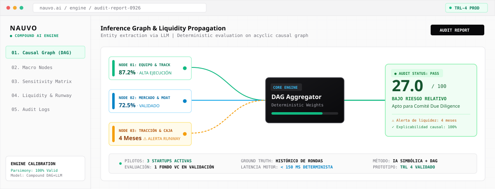

Nauvo: Motor de Inferencia Determinista para Evaluación de Riesgo Pre-Semilla

Evaluación cualitativa y sesgada de startups pre-semilla. Los LLMs genéricos producían justificaciones plausibles pero matemáticamente incoherentes en flujos de caja y unit economics.
Descarte de modelos monolíticos de caja negra. Definición de arquitectura Compound AI: inferencia causal sobre un Grafo Acíclico (DAG) determinista, restringiendo los LLMs exclusivamente a la extracción de datos no estructurados.
Especificación técnica del motor en Python con propagación jerárquica en 3 macro-nodos (Equipo, Mercado, Runway). Desglose analítico auditable paso a paso con detección automática de alertas de liquidez.
Maduración de tesis de Magíster (TRL 3) a motor funcional validado (TRL 4). Cero deuda de explicabilidad: 3 clientes piloto activos y 1 fondo de Venture Capital en validación comercial (Septiembre 2026).